中小型业务系统（校园网站、企业内网、实训平台）普遍面临同一组矛盾：安全责任在身，但安全能力与人力都不足。 等保测评要求"入侵防范与恶意代码防范"，而现实是一个运维人员要同时负责业务、网络、服务器， 没有专职安全工程师去盯告警。我们在调研中归纳出三类具体痛点：
| 痛点 | 现状 | 后果 |
|---|---|---|
| ① 商业产品重 | 态势感知 / IDS 类产品按节点或流量授权，采购与年度维保成本高，且多为软硬一体机 | 预算有限的中小单位只能放弃，或只买"合规摆设" |
| ② 开源方案难落地 | Suricata + ELK + 防火墙联动需要 3~5 个组件、专职调优；规则误报无人标定 | 部署两周，告警两天就没人看，最终闲置 |
| ③ 告警不可判读 | 告警只给规则 ID 和英文消息，值班人员无法判断"这条到底是不是真攻击" | 要么全部忽略（漏报），要么全部封禁（误封业务） |
本项目的出发点很直接：把「采集—检测—研判—处置—留痕」这条闭环压进一台机器、一个进程里， 并用 AI 把"规则 ID"翻译成"人话结论"，同时保留完整的确定性兜底 —— 让没有安全团队的单位也能真正用起来。
| 能力域 | 具体能力 | 技术支撑 |
|---|---|---|
| 采集 | eBPF 内核态抓包 / scapy 用户态抓包 / 仿真流量，三级自动降级；HTTP 侧另支持访问日志与代理投递 | collector 模块、滑动窗口聚合、500 ms tick |
| 检测 | 端口扫描、认证端口暴破、非标准端口高频访问、突发流量峰值；Web 攻击 21 大类；CVE 指纹匹配 | EWMA + 稳健 Z-score、Isolation Forest、171 条 Web 规则、统一规则层 |
| 研判 | 聚合评分 + 直达告警双通道；AI 研判（模型 → 本地规则 → 模板 → 待人工） | 滑动窗口加权评分、DeepSeek V4-Flash、降级链 |
| 响应 | 自动/手动封禁、TTL 自动解封、白名单闸门、九章 HTML 证据报告 | iptables / nftables / firewalld 适配，DRY_RUN 预演 |
| 运营 | 大屏、威胁事件库、资产台账、漏洞清单、规则管理、用户与审计 | SSE 实时推送、ECharts、SQLAlchemy |
| 角色 | 关注点 | 在本系统中的动作 | 典型场景 |
|---|---|---|---|
| 运维 / 网管 | 业务别被打、别误封、出事能溯源 | 看大屏、确认/封禁 IP、下载证据报告 | 校园门户被扫描与暴破 |
| 安全值班 | 告警要不要处置、优先级如何 | 看风险分与 AI 研判、批量处置 | 告警风暴时快速收敛 |
| 开发 / 测试 | 自己写的接口有没有被打穿 | 提交请求体检、看流量侧漏洞研判 | 上线前验证注入/上传是否可被利用 |
| 教学 / 演练 | 能演示、能复现、能讲清原理 | 用演示模式跑剧本、对照规则库讲解 | 网络安全课程实验、红蓝对抗演练 |
| 维度 | 实测数据 |
|---|---|
| 代码规模 | 后端 84 个 Python 模块（backend/app 下 12 个业务域）；大屏 15 个 JS 模块 + 11 个页面 |
| 规则能力 | Web 知识库 171 条 / 21 大类；入侵包 742 条、研判包 300 条、病毒特征 329 条；统一 RulePlan 预编译 436 条正则，构建耗时 59.9 ms |
| 测试规模 | pytest 226 个用例；verify_runtime.py 83 项端到端断言；verify_layout.js 128 项观感断言 |
| 部署形态 | 本地 3 条命令 / 裸机 systemd 脚本 / Docker Compose（PostgreSQL + InfluxDB + API + nginx） |
第 2 章从角色与场景出发给出需求与取舍；第 3 章描述分层架构、数据流与接口契约； 第 4 章为 AI 技术专章，回答"为什么选这个模型、怎么接进来、怎么优化"； 第 5 章按功能模块讲实现细节并配真实运行截图；第 6 章给出测试方法与部署路径；第 7 章总结创新点与后续规划。 其中 3.7 与 5.10 说明云端协同的接入边界与实现，这两节只讲"协作"，不改变"检测在本机"这一主干。
需求并非凭空设计，而是从三个渠道收敛而来：一是 等保 2.0 三级"入侵防范"条款对流量侧审计、告警与处置的要求； 二是对校内两套真实 Web 业务（Apache 8080 站点）的运维访谈，梳理"出事后他们究竟想看什么"； 三是对开源方案（Suricata / Wazuh / ELK）实际部署体验的复盘，明确哪些环节是压垮落地的最后一根稻草。
| 编号 | 需求 | 验收标准 | 优先级 | 实现位置 |
|---|---|---|---|---|
| FR-01 | 实时流量监控 | 带宽/包速率/连接数 1 s 内刷新，断线自动重连 | 高 | collector + SSE |
| FR-02 | 异常流量检测 | 端口扫描、暴破、突发峰值可检出，且正常业务零告警 | 高 | detection/engine.py |
| FR-03 | Web 攻击检测 | OWASP Top 10 主要类型可检出，编码/注释绕过可命中 | 高 | detection/web_knowledge.py |
| FR-04 | 告警聚合与降噪 | 同一攻击不刷屏；单条致命攻击不被窗口延迟 | 高 | scoring.py + direct_alert |
| FR-05 | AI 研判 | 每条告警有结论与来源；模型不可用时自动降级且可见 | 高 | analysis/fallback_chain.py |
| FR-06 | 自动封禁 | 达门槛自动封禁、TTL 到期自动解封、白名单优先 | 高 | response/blocker.py |
| FR-07 | 证据留存与报告 | 告警可查请求快照；封禁可导出含哈希的报告 | 中 | threat/ + reports/ |
| FR-08 | 漏洞提醒 | 按 CVE 与版本区间匹配，给出修复建议 | 中 | scanner/ + analysis/vuln_advisor.py |
| FR-09 | 资产台账 | 自动发现内网资产、端口与服务指纹 | 中 | scanner/ |
| FR-10 | 登录与审计 | 全站鉴权、CSRF 防护、操作留痕、三角色 | 中 | auth/ |
| FR-11 | 云端协同（可选增强） | 换设备可用同一身份查到归档；证据可分享给他人查看；无本地 Key 也能用模型；云端不可用不影响检测 | 低 | dashboard/cloud.html + js/cloud.js |
| 类别 | 要求 | 设计措施 | 达成情况 |
|---|---|---|---|
| 性能 | 采集聚合周期 500 ms；告警到前端 < 2 s；页面首屏 < 2 s | tick 500 ms、SSE 推送、规则预编译 | 直达告警端到端实测 min 156 / 中位 158 / max 177 ms；规则构建 59.9 ms |
| 可靠性 | 任一可选依赖缺失都不能让主流程崩溃 | 采集三级降级、ML/RE2/Sigma 缺失自动跳过、AI 四级降级 | 仅依赖 4 项必需包，其余全部可降级 |
| 安全 | 默认不误伤生产；密钥不落代码；敏感信息不出网 | DRY_RUN 默认开、TTL 解封、白名单闸门、Prompt 字段白名单 | 五道闸门 + 审计日志；.env 不入库 |
| 可部署 | 3 条命令可跑；支持 Windows 演示 | SQLite 零配置、仿真流量模式、静态大屏无构建 | Windows 下完整链路可演示（见 6.5） |
| 可观测 | 关键链路状态可查 | /health、/status、/ai/status、/rules/sources、审计日志 | 全部页面可点开查看 |
| 可维护 | 规则与参数不写死在代码里 | 规则 JSON/YAML 热加载、136 个环境变量 | 放文件即生效，无需重启 |
安全系统的功能清单容易堆砌，难的是划清边界。本项目在需求阶段就明确拒绝了三个"看起来很酷"的做法：
| 被拒绝的做法 | 原因 | 本项目的选择 |
|---|---|---|
| 让 AI 直接决定封禁 | 模型存在幻觉与提示注入风险，一次误判可能直接切断生产业务 | AI 只出建议，封禁门槛由 AUTO_BLOCK_MIN_SEVERITY 与规则权重决定 |
| 模型不可用时静默兜底 | 用户会误以为看到的是模型结论，责任边界模糊 | 降级必须可见：每级写 source / degraded，前端标注"已降级" |
| 把原始报文发给大模型 | 内网拓扑、Cookie、Token 外泄；载荷中可能藏 ignore previous instructions 注入 | 只发结构化摘要，12 个白名单字段 + 内网 IP 脱敏 |
这三条红线贯穿后续所有设计，也是第 4 章 AI 方案与第 13 章创新点的来源。
系统采用六层单向依赖架构：上层只依赖下层接口，下层不感知上层；任何一层失效都有明确的降级路径。 选择单体 + 分层而不是微服务，是因为目标场景是"一台机器、一个运维"，微服务带来的部署与运维成本远大于其收益。
CAP_BPF 权限；很多评审机、Windows 开发机、容器内都拿不到。
如果只支持一种方式，系统在非生产环境就"跑不起来"，评审与教学都无从谈起。三级降级让任何环境都能跑通完整链路，
只是数据源保真度不同，链路本身一致。
| 模块 | 职责 | 关键文件 | 对外接口 |
|---|---|---|---|
collector/ | 三级抓包、流聚合、端口/会话统计、HTTP 事件接入、时序落库 | service.py sources.py sink_influx.py | 内部事件总线 |
detection/ | 统计基线、四类异常规则、Web 攻击匹配、Isolation Forest、评分聚合、自适应阈值 | engine.py zscore.py web_knowledge.py scoring.py adaptive_threshold.py | /alerts /signals /thresholds |
rules/ | 多源规则加载与同构、档位分层、RulePlan 预编译、热加载 | registry.py packs.py sigma_loader.py et_loader.py | /rules/* |
analysis/ | AI 研判、Prompt 构造、降级链、流量研判、漏洞建议、流量→漏洞研判 | fallback_chain.py llm_client.py prompts.py web_vuln_infer.py | /ai/* /vulns/{id}/ai-advice |
response/ | 封禁编排、TTL 解封、白名单闸门、防火墙适配、DRY_RUN | blocker.py firewall.py | /blocks /whitelist |
alerting/ | 多渠道外呼、告警冷却、通知测试 | channels.py | /notify/* |
scanner/ | nmap 扫描、banner 指纹、CVE 匹配、Web 应用漏扫 | cve.py nmap_scan.py webapp.py | /vulns/scan /scanner/webapp |
threat/ | 威胁事件落库、保真度分级、标签、留存清理、流式导出 | store.py | /threats/* |
reports/ | 九章自包含 HTML 证据报告、SHA-256 校验 | builder.py | /reports/* |
auth/ | scrypt 口令、服务端会话、CSRF、限流锁定、三角色、审计 | service.py password.py | /auth/* /users |
api/ | 路由聚合、鉴权依赖、SSE 长连接、出参契约 | *.py（14 个路由文件） | — |
bus.py models.py | 进程内事件总线（采集线程 → SSE）；ORM 模型 | — | — |
| 步 | 环节 | 动作 | 实测 / 说明 |
|---|---|---|---|
| 1 | 采集 | 从 eBPF / scapy / 代理 / 访问日志拿到 GET /product/detail?id=1' OR '1'='1 | 仿真模式每 2.5 s 一条剧本 |
| 2 | 归一化 | 多轮 URL 解码 + HTML 实体解码 + SQL 注释转空格 + 空白折叠 + 转小写 | 专门覆盖 %2527、union/**/select 绕过 |
| 3 | 规则匹配 | RulePlan 预编译的 path/query/body/header 掩码匹配，命中 WEB-SQLI-002 + INT-SQLI-046 | 436 条正则，构建 59.9 ms |
| 4 | 评分 | 生成 signal（权重 = 严重度 × 置信度）；单条权重 ≥ 6.0 触发直达，否则进 300 s 窗口聚合 | 直达规则 30 条（Web 知识库内） |
| 5 | AI 研判 | 摘要出网 → 模型返回 confirm/dismiss；不可用则本地规则/模板兜底并标注来源 | 3 s 超时，异步线程 |
| 6 | 响应 | 严重度 ≥ high 且命中直达 → 进白名单闸门 → DRY_RUN 判定 → iptables/nftables 下发 | 默认 DRY_RUN=true 只记录 |
| 7 | 告警 | 钉钉/企微/邮件外呼 + SSE 推送大屏 + 威胁事件落库 | 端到端 156~177 ms |
| 8 | 留痕 | 处置流水、审计日志、九章 HTML 报告（含证据 SHA-256）；TTL 到期自动解封 | 默认 30 分钟 |
| 表 | 关键字段 | 说明 |
|---|---|---|
alerts | source_ip, category, severity, score, risk_score, direct_alert, evidence(JSON), ai_verdict, ai_source, status | 聚合后的告警，含评分与 AI 研判回写 |
threat_events | rule_id, rule_pack, tier, capture_level(L0/L1), method, path, status_code, request_snapshot, tags | 每条规则命中都落库（含被抑制的），供回溯与标定 |
blocks | ip, reason, severity, ttl, expires_at, hits, dry_run, report_id | 封禁记录与处置流水 |
assets / vulns | ip, ports, fingerprints / cve_id, cvss, source(traffic_rule｜traffic_ai), evidence | 资产台账与漏洞清单 |
users / sessions / audit_logs | username, pwd_hash(scrypt), role / token, expires_at / actor, action, target, ip | 鉴权与审计 |
thresholds | detection_type, dimension_key, base_value, current_value, fp_rate | 自适应阈值的人工覆盖与学习结果 |
| 约定 | 设计 |
|---|---|
| REST 风格 | 资源名词复数（/alerts、/blocks、/vulns），动作以子路径或 POST 表达（/alerts/{id}/block、/rules/reload） |
| 实时推送 | 两条 SSE：/stream/metrics（500 ms 一帧指标）与 /stream/events（告警/处置事件），nginx 侧关闭缓冲 |
| 鉴权 | 浏览器走服务端会话 Cookie + CSRF Token；脚本/代理走 X-API-Token；二者其一即可 |
| 错误语义 | 封禁类操作返回语义化状态：已存在 / 白名单拒绝 / 已达 TTL，便于前端给出准确提示 |
| 契约 | Pydantic 模型统一出入参，/docs 自动生成可交互 OpenAPI 文档，评审可直接调 |
大屏的第一要求是"现场不能开天窗"。js/api.js 实现三级数据源：SSE 推送（首选，实时）→
HTTP 轮询（SSE 断开时降级，2 s 一次）→ 本地演示数据（js/mock.js 接管全部接口，
并周期性模拟端口扫描/暴破/突发流量剧本，右上角标注「演示数据」）。页面层只依赖统一的 SecApi 接口，
不感知当前处于哪一级，因此功能与观感在三态下保持一致。
系统的主链路是「一台机器、一个运维」的单机闭环，这个判断没有变。但现场有三件事是单机做不到的：
换台机器还能查历史、把证据发给同事或评审、不配 API Key 也能用模型。
这三件事恰好是云服务擅长的，于是单独做了一个页面 dashboard/cloud.html（模块 3.7 云端协同），
把「协同」外包给云端，而采集、检测、研判、封禁、规则全部留在本地 ——
云端不可用时，前 12 章的检测能力完全不受影响。
| 云端能力 | 落点 | 为什么必须放云端 |
|---|---|---|
| 身份 | 邮箱验证码登录 | 换设备后要能认出是同一个人，本地账号体系跨不了机器 |
| 归档 | 云数据库表 secops_archive | 告警与封禁的价值在"事后追溯"，而事后往往已经不在同一台机器上 |
| 证据 | 对象存储 users/<uid>/reports/ | 报告要能发给别人看，本地文件系统给不出可分享的地址 |
| 模型 | 托管大模型 deepseek-v4.1-flash | 免密钥调用，省掉"每个评审都要先申请一个 API Key"的门槛 |
四道隔离闸门保证云端不成为新的泄露面：
secops_archive.owner_id TEXT DEFAULT auth.uid() + ENABLE ROW LEVEL SECURITY + owner 策略，
前端永不传 owner_id，换账号只可能查到自己的行；users/<当前 uid>/reports/，同一 Bucket 下别人的前缀读不到；a.b.*.*，与后端 AI 研判的脱敏口径保持一致。text/plain 下发（防共享域名上的存储型 XSS），签名直链直接打开只会看到源码，必须由前端取回后
按 HTML 重新渲染；③ 平台存储不认 upsert，同名对象报 KEY_ALREADY_EXISTS，
改「先删后传」才是覆盖语义。
本章回答三个问题：AI 用在哪些点、为什么这样选型、怎么接进来并优化。核心观点是 —— 在安全运营场景中，AI 的价值不是"替代规则"，而是把规则输出翻译成可决策的结论， 并且必须在不确定时明确说"不知道"，而不是编一个结论。
| # | 能力 | 输入（结构化摘要） | 输出 | 规则做不到的部分 |
|---|---|---|---|---|
| 1 | 告警研判 | 类别、严重度、置信度、评分、risk_score、direct_alert、贡献规则 ID、证据键值（zscore/命中次数/端口数） | verdict（4 值）+ confidence + suggestion（3 值）+ 中文理由 | 规则只能判断"命中没命中"，无法判断多条证据是否互相印证 |
| 2 | 流量态势研判 | 近 10 min 窗口：bps/pps/连接数、告警总数与直达数、信号类别分布 | 整体判断 + 发现列表 + 处置优先级 | 无法把"带宽涨了"与"同时多类告警"合成为一句态势结论 |
| 3 | 漏洞修复建议 | CVE、CVSS、版本、资产角色、命中证据 | 修复步骤 + 验证方法 + 回滚注意 | 知识库只能给通用描述，给不出贴合该资产的步骤 |
| 4 | 攻击流量→漏洞研判 | 已捕获的请求特征 + 响应特征（状态码、回显、报错、反射） | 已确认 / 疑似 / 未命中 + 判定依据 | 主动漏扫看不到注入点这类无版本指纹的漏洞 |
| 候选方案 | 结论 | 评估依据 |
|---|---|---|
| 本地部署 7B 级开源模型 | 否 | 与"资源占用可控、单机可跑"的定位直接冲突：推理需数 GB 显存/内存，评审机普遍无 GPU；模型下载与首启耗时也不适合演示 |
| 通用高阶闭源模型 | 部分否 | 单条研判只需 ≤512 token 的短输出，用高阶模型属于成本浪费；且首字延迟常 > 3 s，会拖住告警节奏 |
| DeepSeek V4-Flash （OpenAI 兼容接口） | 采用 | ① 中文安全语料理解好、JSON 输出稳定；② 延迟满足 3 s 超时约束；③ 单价低，长期运行成本可控；④ OpenAI 兼容意味着换模型只改 LLM_BASE_URL 与 LLM_MODEL 两个环境变量，不被厂商锁定 |
| 纯规则 / 模板 | 保留为兜底 | 确定性高、零延迟、零成本，但写不出"证据是否互证"这类判断；作为降级链的最后两级而非唯一方案 |
告警 / 漏洞 / 流量事件
│
▼
prompts.build_alert_digest() ← 12 个白名单字段 + 内网 IP 脱敏（唯一允许出网的内容）
│
▼
fallback_chain.AnalysisFallbackChain.analyze()
│ ① 异步：研判线程池（1~4 线程）+ 200 长度队列，满则丢弃并标记 pending
│ ② llm_client.chat_json()：timeout=3s，max_retries=1，结果缓存 3600s
│ ③ validate_result()：verdict/suggestion 枚举 + confidence 值域校验
▼
{ verdict, confidence, suggestion, reason, source, degraded }
│
├─→ 异步写回告警 / 漏洞记录 ──→ SSE 推送大屏 ──→ 前端展示来源标签
└─→ 仅作建议：不参与 AUTO_BLOCK 判定（封禁门槛由规则权重与级别决定）| 参数 | 默认值 | 作用与取舍 |
|---|---|---|
LLM_TIMEOUT_SEC | 3.0 | 必须远小于告警节奏；超时即判不可用并降级，不做重试风暴 |
LLM_MAX_RETRIES | 1 | 只重试 1 次，避免网络抖动放大成队列堆积 |
LLM_CACHE_TTL_SEC | 3600 | 同源同类告警 1 小时内复用结论，直接削减调用量 |
LLM_WORKER_THREADS | 1 | 研判与主循环隔离，1 线程即可满足单机告警速率（可调到 4） |
LLM_QUEUE_SIZE | 200 | 队列满时丢弃并标 pending（待人工），不阻塞采集与告警主链路 |
LLM_MASK_INTERNAL_IP | true | 出网前把内网 IP 变为 192.168.*.* 形式 |
把原始报文塞给大模型是最容易犯的错误 —— 既泄露内网信息，又给了攻击者一条提示注入通道
（载荷里写一句 ignore previous instructions 就可能操纵研判结果）。本项目的做法是
在代码层建立字段白名单/黑名单，而不是依赖"提示词里要求模型忽略"。
| 机制 | 实现 |
|---|---|
| 字段黑名单 | DROP_EVIDENCE_KEYS = {request, rules, snippets, message, signals, matched_pattern, remediation…} —— 原始载荷、命中片段、完整规则体一律不出网 |
| 字段白名单 | 只允许 SAFE_STRING_KEYS（detector / category / cwe / severity / confidence…）与 SAFE_LIST_KEYS（rule_ids / categories_hit…）进入 Prompt |
| IP 脱敏 | mask_ip() 把内网地址替换为网段形式，仅保留"同段不同主机"的可区分性 |
| 输出形状约束 | 系统提示明确要求只输出 JSON、枚举值固定、理由 ≤120 字；解析时先去 ``` 围栏再 json.loads |
| 防臆测 | 提示词显式要求：证据不足时输出 unknown，不要臆测 |
# 系统提示（节选，完整内容见 backend/app/analysis/prompts.py）
你是企业流量安全运营中心的告警研判助手。
你会收到一条结构化告警（JSON），请判断它是「真实攻击」还是「误报」，并给出处置建议。
...
研判规则：
- 若 direct_alert=true，表示单条高置信度致命攻击规则已命中，研判应倾向于 confirm；
- 若为聚合告警，需综合评估多个 signal 的证据一致性：证据互相印证
（如端口多样性 + SYN 占比高）倾向 confirm；只有单一弱证据倾向 suspect 或 dismiss；
- 无法判断时输出 unknown，不要臆测。
只输出 JSON：{"verdict":"confirm|suspect|dismiss|unknown","confidence":0.0-1.0,
"suggestion":"block|watch|ignore","reason":"一句话中文研判理由（<=120 字）"}| 字段 | 取值域 | 非法时的处理 |
|---|---|---|
verdict | confirm / suspect / dismiss / unknown | 不在枚举内 → 视为本次调用不可用，进入降级链下一级 |
confidence | 0.0 ~ 1.0 浮点 | 越界或非数值 → 同上传为无法解析 |
suggestion | block / watch / ignore | 非法 → 降级；即使合法也不会直接触发封禁，仅作为建议展示 |
reason | ≤120 字中文字符串 | 缺失 → 用检测器证据拼一句兜底理由 |
这套契约的意义是：模型输出永远无法"污染"下游逻辑。下游只认枚举值，任何越界输入都会被降级链接管， 因此不会出现"模型返回 block 导致业务被误封"这类事故。
| 级 | 来源（source） | 触发条件 | 输出特征 |
|---|---|---|---|
| 1 | deepseek_v4_flash | 配置了 Key，调用成功且通过 schema 校验 | degraded=false，理由由模型生成 |
| 2 | local_rules | API 不可用，但 risk_score ≥ 阈值×1.5 或命中直达规则（证据已足够） | degraded=true，结论由本地评分规则给出 |
| 3 | template | API 不可用，且该类别存在预设模板 | 按大类模板输出判定倾向，并把阈值/命中次数填进理由 |
| 4 | pending | 以上都不适用（证据不足、类别未知） | 明确标记"待人工核查"，绝不编造结论 |
前端会把 source 与 degraded 直接渲染成徽标，例如 来源 local_rules（已降级）。
下面是未配置 API Key 时的真实现场数据（演示环境实测）：
$ curl -s http://127.0.0.1:8000/api/v1/ai/status
{"enabled":true,"model":"deepseek-v4-flash","client_available":false,
"alert_analysis":{"total":32,"deepseek_v4_flash":0,"local_rules":30,"template":2,"pending":0},
"traffic_analysis":{"total":1,"local_rules":1},
"note":"AI 不可用时自动降级为本地规则/模板/知识库，结果中 source 与 degraded 字段可见；
AI 结论不会直接触发封禁。"}source 变为 deepseek_v4_flash、degraded=false —— 无需改一行代码。
| # | 策略 | 解决的问题 | 实现与验证方式 |
|---|---|---|---|
| 1 | 结构化摘要替代原始报文 | 隐私外泄 + 提示注入 | 12 字段白名单；mask_ip 脱敏；单测覆盖"载荷不进 Prompt" |
| 2 | 严格 schema 校验 | 模型自由发挥破坏下游 | 枚举 + 值域双校验，非法即降级（见 4.5） |
| 3 | 四级降级 + 来源可见 | 模型故障时"装死"或"编结论" | /ai/status 四级计数；三处界面显示来源徽标 |
| 4 | 异步 + 队列削峰 | 研判拖慢 500 ms 主循环 | 独立线程池 + 200 队列；主链路零阻塞（直达告警 156~177 ms 不含模型路径） |
| 5 | 超时与重试上限 | 网络抖动导致告警堆积 | timeout=3s、retries=1，失败即降级 |
| 6 | 结果缓存 | 同源同类告警重复调用浪费成本 | TTL 3600 s，按（源 IP + 类别）复用结论 |
| 7 | AI 与处置权解耦 | 模型幻觉导致误封生产 | 封禁只看 AUTO_BLOCK_MIN_SEVERITY 与规则权重；研判仅影响展示与排序 |
| 指标 | 结果 | 说明 |
|---|---|---|
| 研判覆盖率 | 32 / 32 条告警均有结论 | 模型不可用时由本地规则（30）+ 模板（2）兜底，0 条悬空 |
| 主链路影响 | 0 ms（异步） | 直达告警端到端 156~177 ms 不经过模型路径 |
| 单次调用开销 | 输入约 700~900 token，输出 ≤512 token | 仅结构化摘要，不含原始报文 |
| 调用量压缩 | 缓存命中后同源同类 1 h 内不重复调用 | 估算可将日均调用量压缩一个数量级（以实际告警分布为准） |
| 人工价值 | 每条告警附带一句中文理由 + 处置建议 | 值班人员无需回查规则 ID 即可判断优先级 |
cve_rules.json 建索引做检索增强，减少"通用话术"。本章按模块讲实现要点，截图均为系统在演示模式下运行 30 分钟后的真实界面（1920×1080）， 数据来自真实检测链路：289 条信号、51 条告警、4 条自动封禁、26 条漏洞。
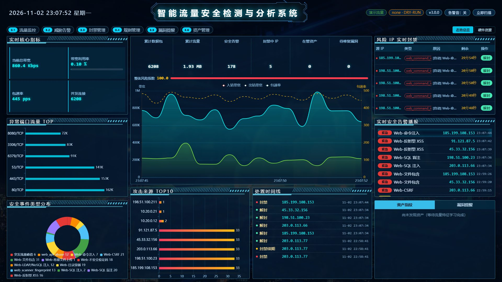
大屏由 8 个面板组成，全部数据来自 /overview + /stream/metrics（SSE，500 ms 一帧）。
实现上有两个细节值得说明：其一，所有直角坐标系图表统一设置 containLabel: true 并在
rem 基准确定后再初始化，避免窗口缩放时坐标轴被裁切；其二，饼图隐藏引导线标签、改用底部横排图例并开启
avoidLabelOverlap，因为在 1080p 大屏上引导线交叉是最常见的观感缺陷 —— 这两条已固化为
verify_layout.js 的自动断言（共 128 项）。
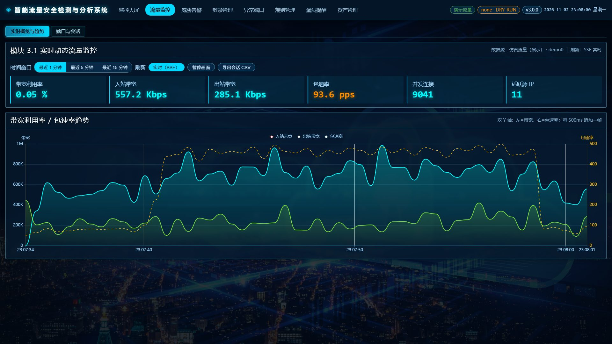
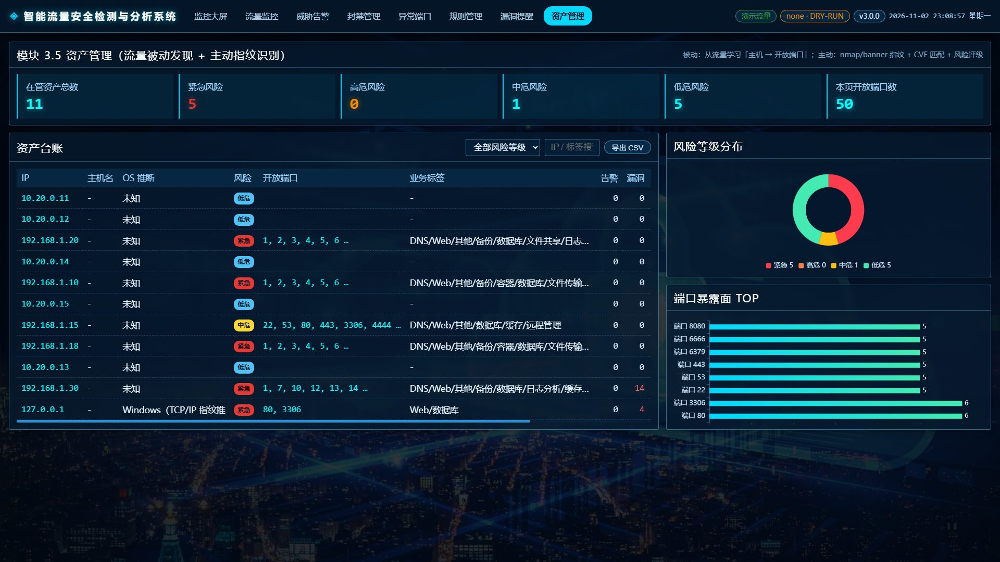
流量页展示入/出向带宽、包速率、活跃会话与新建速率，并按端口聚合 TOP 榜； 资产页把扫描得到的端口、服务指纹与漏洞按端口归拢展示，支持「重新扫描」与「按攻击流量研判漏洞」。
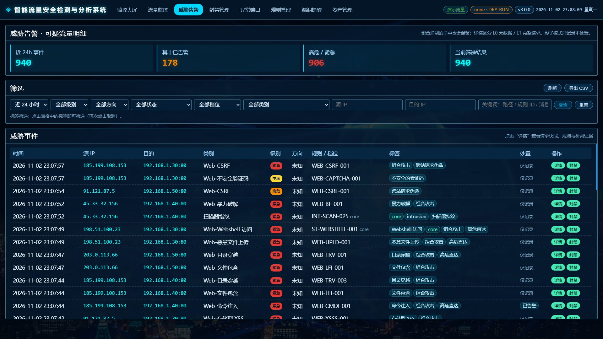
告警可读性的关键在归一化：多轮 URL 解码（含 %uXXXX）→ HTML 实体解码 →
SQL 注释转空格 → 空白折叠 → 转小写，专门覆盖 %2527（双重编码）、
union/**/select（注释分隔）、<script>（实体编码）这类绕过手法。
匹配后由 safe_snippet() 截取命中片段（长度受限、敏感头脱敏），
所以表格里能直接看到 ' or '1'='1 这样的原始证据，而不是只有规则编号。
| 机制 | 规则 |
|---|---|
| 聚合抑制 | 同一（源 IP + 类别）在 ALERT_COOLDOWN_SEC（默认 60 s）内只告警一次，其余记 suppressed 且前端可见 —— 不静默丢弃 |
| 直达机制 | 单条 signal 权重 ≥ 6.0（= critical 5.0 × high 置信 1.2）绕过聚合立即告警 |
| 组合提级 | 窗口内命中 ≥2 类攻击时按组合攻击处理，风险分与展示优先级提升 |
| 证据留存 | 每次命中落 threat_events（含被抑制的），按 L0/L1 保真度分级留存 7 天 |
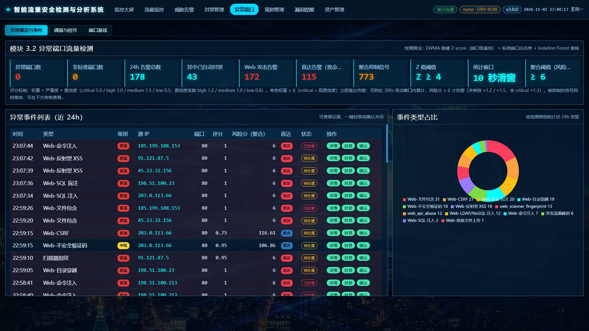
| 算法 | 公式 / 参数 | 为什么这样做 |
|---|---|---|
| EWMA 基线 | s(t) = α·x(t) + (1-α)·s(t-1)，α=0.15，预热 20 tick | O(1) 内存，对趋势自适应；检测到异常时用 1/10 权重吸收，防止基线上移 |
| 稳健 Z-score | z = 0.6745·(x − median) / MAD，阈值 3.5 | MAD 对离群点不敏感，避免"攻击流量本身把均值方差带偏"导致漏报 |
| 端口扫描 | 10 s 内不同目的端口数 ≥ 60（可配） | 直接对应扫描行为特征，无需模型 |
| 暴力破解 | 60 s 内认证端口访问次数 ≥ 40 | 按端口类型（22/3389/3306/6379…）分别统计 |
| 突发峰值 | 入向 bps 超过动态阈值且高于绝对下限 | 双重条件避免小流量时段误报 |
| Isolation Forest | 多维行为向量（bps/pps/连接数/端口熵/新建速率…），contamination=0.05 | 无监督、无需标注；仅做"离群确认"，不单独产生告警 |
| 评分聚合 | weight = 严重度权重 × 置信度系数（critical 5.0 / high 3.0 / medium 1.5 / low 0.5；置信 high 1.2 / medium 1.0 / low 0.8），300 s 窗口累计 ≥ 6.0 告警 | 权重表把"多严重 × 多可信"量化，避免不同规则被一视同仁 |
| 自适应阈值 | 按「检测类型 × 资产口径 × 时段」学习误报率，幅度限制在静态基准 0.5~2.0 倍 | 用人工反馈（确认=误报 / 封禁=真阳）自动收放，但设上下限防止跑飞 |
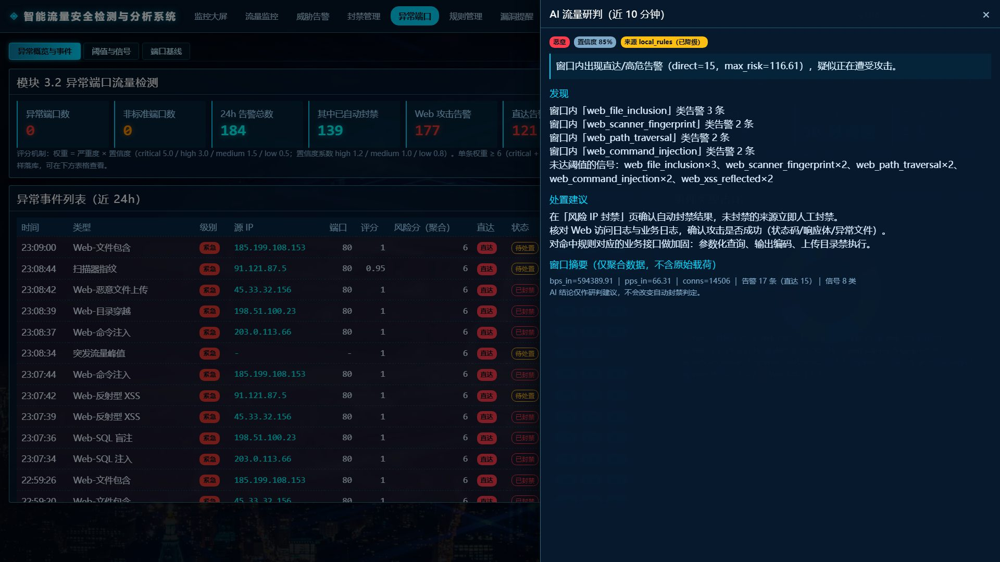
抽屉右侧刻意分成四段：结论（徽标 + 一句话摘要）→ 发现（逐条列出命中的告警类与次数）→ 处置建议（可执行动作）→ 窗口摘要（bps/pps/连接数/告警数/信号类数，并注明"仅聚合数据，不含原始载荷"）。 最后一行固定提示："AI 结论仅作研判建议，不会改变自动封禁判定。" —— 这是把第 2.4 节的设计红线直接写进 UI。
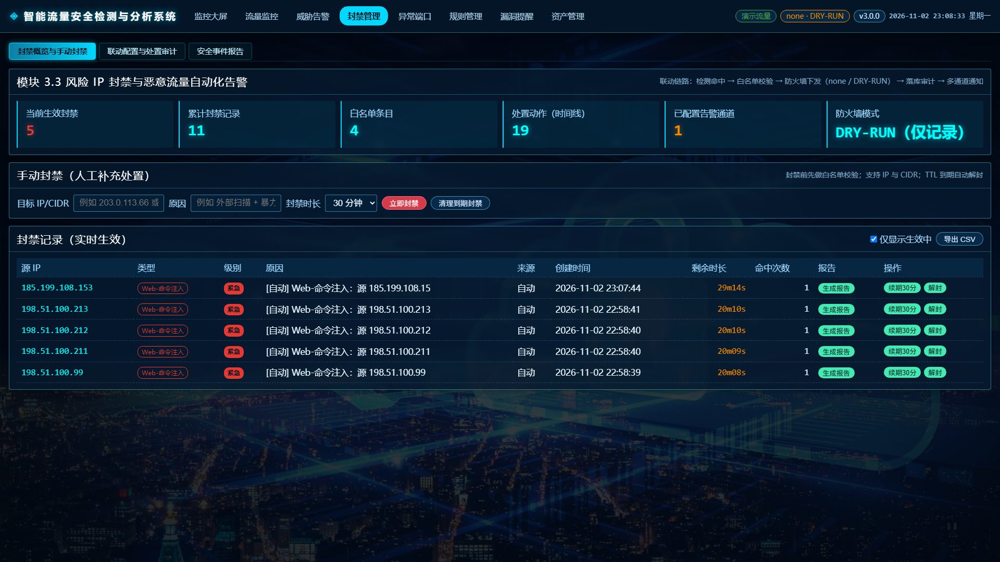
封禁是唯一会"改变生产"的动作，因此设计了五道闸门：① 白名单 CIDR 拦截 → ② 严重度门槛
（默认 ≥ high）→ ③ TTL 到期自动解封（默认 30 min）→ ④ DRY_RUN 预演（默认开，只记录命令不下发）
→ ⑤ 防火墙后端适配（iptables / nftables / firewalld，nftables 用 interval 集合存 CIDR）。
页面顶部把这条链路按顺序写出来，让运维一眼知道"卡在哪一道"。
附带两项运维级设计：最后管理员保护（不允许删除/降权最后一个管理员账号，防止把自己锁死）、 PROTECTED_CIDRS 方向判定（区分入向与出向，避免把运维自己的管理流量封掉）。
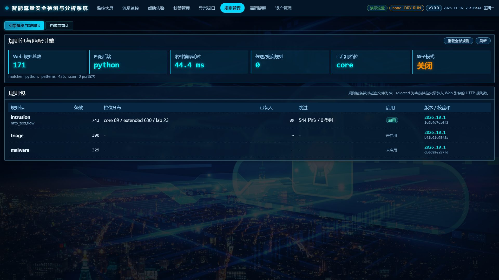
规则层的关键设计是同构：native（内置 JSON）、Sigma（YAML）、Suricata-ET（.rules）、
CVE 扩展、v6 规则包（入侵 742 / 研判 300 / 病毒 329）五种来源，加载期全部转换为同一份
Rule 结构，再编译成 RulePlan（预编译 path_regex、方法掩码、字段掩码）。
安装 google-re2 后可用多模式预筛只减候选、不改判定；未安装自动回落 python 后端。
规则支持热加载（POST /rules/reload 或 300 s 定时），运维放文件即生效，重启为零。
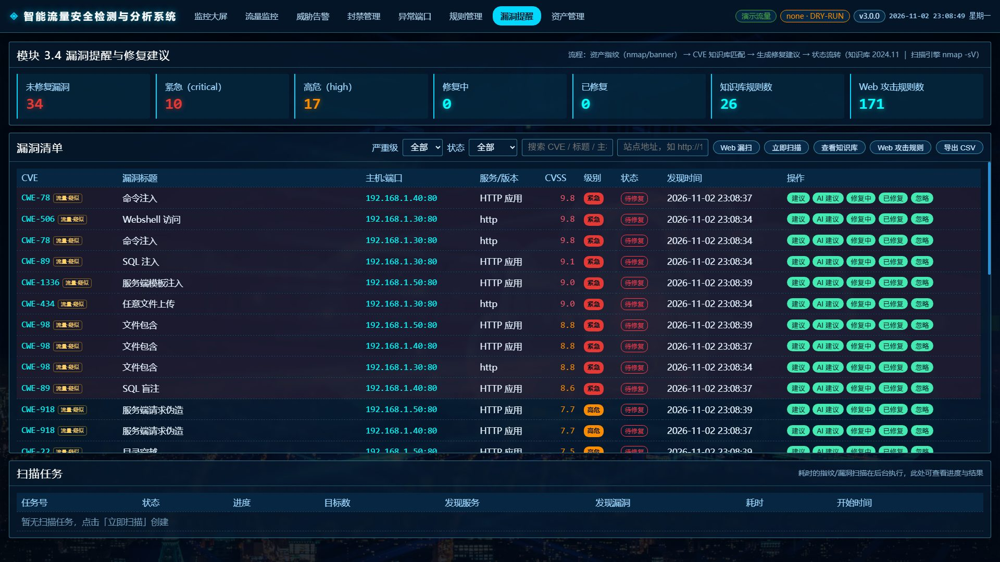
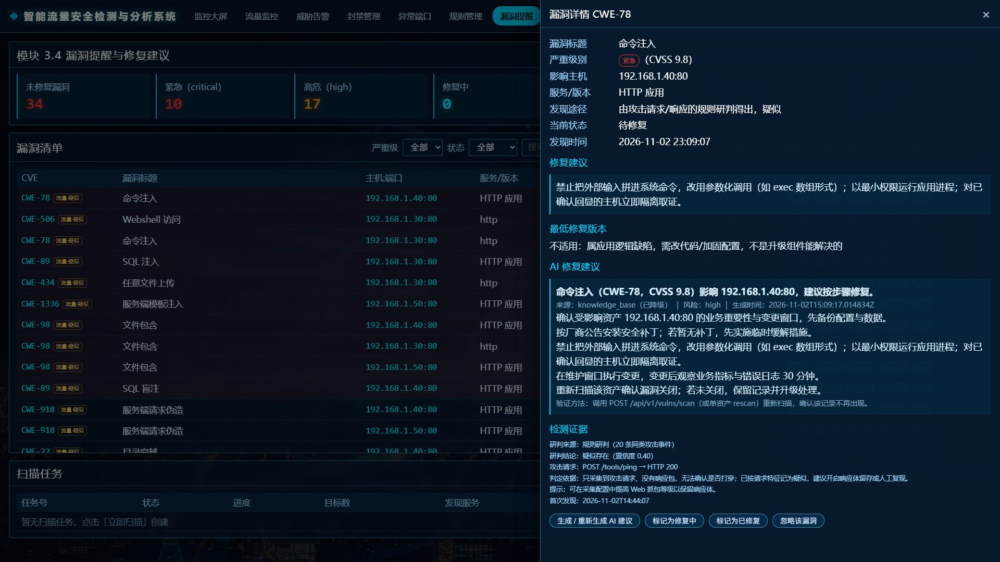
这一模块解决了两类"扫不出来"的问题。第一类是版本指纹类：按 CVE 与版本区间匹配，
版本未知时不猜（宁可缺一条，也不给假结论）。第二类是无指纹类：注入、上传、包含没有版本特征，
主动扫描永远看不见 —— 系统改用"已捕获的请求 + 响应"判定：响应里出现命令回显、SQL 报错、
/etc/passwd 特征行或载荷原样反射才判「已确认」；只有请求没有响应包则记「疑似」。
结论写入漏洞表（source=traffic_rule / traffic_ai），并保留完整判定依据供复核。
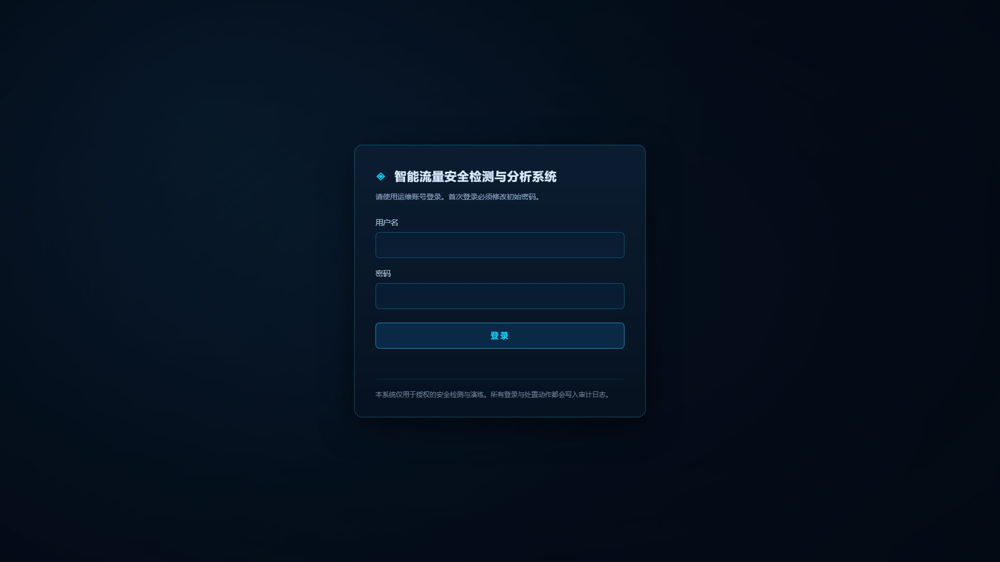
鉴权体系按"能上生产"的标准设计，而不是演示级别的假登录：
PASSWORD_MIN_LEN 可配SESSION_TTL_SEC / SESSION_IDLE_SEC 双重过期LOGIN_MAX_FAILS 次失败后锁定 LOGIN_LOCK_SECaudit_logsADMIN_INITIAL_PASSWORD 留空时生成一次性随机密码打印到启动日志，登录后强制改密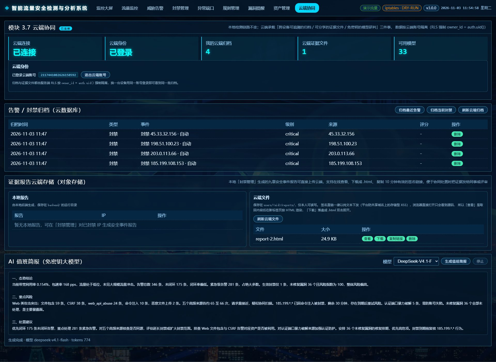
这一页有四个区块，各自对应云服务的一项能力，任一区块不可用都不影响其余三块：
实现上有三个不显眼但必须做对的点：
Content-Type 恒为 text/plain，
浏览器只会显示源码。因此「查看」由前端取回文本后按 text/html 写进新标签页；
而新窗口必须在点击的同一轮事件里同步打开，放到异步回调里会被浏览器当弹窗拦截。upsert，同一 IP 再次生成报告会撞
KEY_ALREADY_EXISTS；客户端自动「先删后传」完成覆盖。| 验证项 | 实测结果（发布域名下，真实云环境） |
|---|---|
| 邮箱验证码登录 | 真实邮箱收码 → 校验通过 → 页面切到「已登录」，getSession() 返回 uid |
| 归档写入 / 读回 | 写入 20 条，owner_id 由 DEFAULT auth.uid() 自动填充；刷新后计数 20，RLS 只返回本人行 |
| 证据上传 → 查看 | 九章报告上传后，新标签页按 HTML 渲染：9 个章节、7 张表格、正文 12,172 字，页面文本中无源码泄漏 |
| 下载 / 分享 | 另存为同名 .html（如 report-2.html）双击即开；签名直链 600 秒有效，仅点击时生成 |
| AI 值班简报 | deepseek-v4.1-flash 流式返回，中文研判 412～594 字 / 750～941 tokens |
| 未登录闸门 | 未登录时三个写操作区块显示「登录云端账号后显示」，不发任何写请求，也不降级到 localStorage |
../、;id 这类片段时，上传会被云端 WAF 以 403 拒绝（响应体只有一句
error）。这是平台侧的防护，不是接口写错；界面会把它翻译成明确提示并给出替代路径（先在本地「下载」留存）。
同理，批量归档时若个别行命中判据，客户端自动退化为逐行提交，只跳过命中行、不影响其余记录。
| 层次 | 工具 / 脚本 | 规模 | 覆盖内容 |
|---|---|---|---|
| 单元 / 集成 | pytest backend/tests | 194 个测试函数 → 226 个用例 | 算法正确性、接口契约、规则转换、降级链、鉴权与封禁语义 |
| 端到端 | scripts/verify_runtime.py | 83 项断言 | 真实 uvicorn + httpx：SSE 推送、封禁闭环、直达延迟、全部页面与静态资源 |
| 观感 / 布局 | scripts/verify_layout.js | 128 项断言 | 真实执行页面脚本后校验图表配置、颜色与不透明度、抽屉默认态、尺寸自适应 |
| 场景化 | web_attack_test.shverify_web_scan.py | 攻击序列 靶场自检 | 正常流量零误报复核（--normal-only）、攻击流量命中与封禁、漏扫应命中/不应误报 |
| 测试文件 | 函数数 |
|---|---|
test_web_knowledge.py | 36 |
test_rule_loader.py | 20 |
test_web_vuln_infer.py | 17 |
test_api.py | 16 |
test_scoring.py | 15 |
test_fallback_chain.py | 15 |
test_adaptive_threshold.py | 14 |
| 测试文件 | 函数数 |
|---|---|
test_v6.py | 12 |
test_detection.py | 11 |
test_api_contract.py | 11 |
test_blocker.py | 10 |
test_web_profile.py | 9 |
test_cve.py | 8 |
| 合计（参数化后 226 例） | 194 |
执行结果（本机实测，2026-11-02）：
$ .venv/Scripts/python -m pytest backend/tests -q
........................................................................ [ 31%]
........................................................................ [ 63%]
........................................................................ [ 95%]
.......... [100%]
226 passed in 43s$ python scripts/verify_runtime.py
[PASS] SSE /stream/metrics 推送 ≥3 帧
[PASS] 直达告警：投递 RCE 载荷后 SSE 立即收到告警（不等窗口到期）
端到端延迟采样（投递 → SSE 收到告警）：min=156ms, 中位=158ms, max=177ms
[PASS] 直达告警延迟 < 2 秒（P99 要求）
[PASS] AI 研判结果已写回（API 不可用时降级到本地规则/模板）
[PASS] 封禁 / 解封 / 重复封禁 / 白名单拒绝的语义化返回码
[PASS] 全部模块页面与静态资源可访问
===== 结果：83 项通过 / 0 项失败 =====| 验证项 | 结果 | 说明 |
|---|---|---|
| 直达告警端到端延迟 | min 156 / 中位 158 / max 177 ms | 投递载荷 → SSE 收到告警，远低于 2 s 目标 |
| 聚合抑制可见性 | 未达阈值的 signal 可在 /signals 查到 | 抑制不等于丢弃，可回溯 |
| 封禁语义化返回 | 已存在 / 白名单拒绝 / 成功 均有明确状态 | 前端据此给出准确提示，不做"静默失败" |
| AI 降级链 | API 不可用时来源标注为 local_rules / template | 降级结果写入 source 与 degraded |
| 页面可访问性 | 10 个页面 + 全部 JS/CSS/图表库 200 | 共 83 项断言全部通过；第 11 个页面 cloud.html 依赖云端登录态，不入自动断言，见 5.10 的人工实测记录 |
| 测试点 | 构造方式 | 断言 |
|---|---|---|
| 编码/注释绕过 | 对同一注入点分别投递 %2527、union/**/select、<script> | 归一化后仍命中对应规则，攻击类型不因编码变化而丢失 |
| 正常流量零误报 | web_attack_test.sh --normal-only 打 8080 业务站点 | 不产生任何 web_* 告警；误报抑制规则（exclude_patterns）生效 |
| 白名单闸门 | 对白名单内 IP 触发高危攻击并尝试封禁 | 返回"白名单拒绝"状态码，防火墙命令不执行，处置流水记录拒绝原因 |
| 降级链不臆测 | 模拟 LLM 超时 / 返回非法 JSON / 返回越界枚举 | 逐级降级且 source 正确；证据不足时输出 pending 而非编造结论 |
| 方式 | 命令 | 适用场景 |
|---|---|---|
| 本地开发 | uvicorn app.main:app --app-dir backend --port 8000 | 演示、开发、教学；Windows 自动降级仿真流量 |
| 裸机安装 | sudo bash deploy/install.sh --web-profile | Linux 生产：systemd 托管 + setcap 授权 + 可选高保真代理 |
| 容器编排 | docker compose up -d --build | 一键起 PostgreSQL + InfluxDB + API + nginx；抓宿主机流量叠加 docker-compose.host.yml |
| 托管沙箱 （在线演示） | python serve.py（端口取 PORT 环境变量） | 单端口 HTTP 服务，供评审直接访问；本次提交的演示站即以该方式运行 |
# 最小复现步骤（Windows / macOS / Linux 均可）
python -m venv .venv
.venv/Scripts/python -m pip install -r backend/requirements.txt # Linux/macOS 用 .venv/bin/python
cp backend/.env.example .env # 按需修改；保持 DRY_RUN=true
.venv/Scripts/python -m uvicorn app.main:app --app-dir backend --port 8000
# 浏览器打开 http://127.0.0.1:8000/ （首次跳转登录，密码见启动日志）DRY_RUN=true（封禁只记录）、BLOCK_TTL_SEC=1800（30 min 自动解封）、
AUTH_ENABLED=true（全站登录）、WHITELIST_CIDRS（回环/组播/链路本地）。
确认检测与封禁行为符合预期后，再改为 DRY_RUN=false。
| 检查项 | 命令 / 位置 |
|---|---|
| 服务健康 | GET /api/v1/health（版本、采集模式、防火墙后端、DRY_RUN、数据库类型） |
| 运行状态 | GET /api/v1/status、GET /api/v1/system/resources |
| 规则装载 | GET /api/v1/rules/sources（各来源规则数、直达数、构建耗时） |
| AI 通道 | GET /api/v1/ai/status（各级命中数、模型可用性） |
| 业务站点预检 | bash scripts/web_healthcheck.sh（Apache / 8080 / 日志 / 服务） |
| 操作留痕 | GET /api/v1/audit-logs 或规则管理页「用户与审计」 |
| # | 创新点 | 与常见方案的区别 | 可验证证据 |
|---|---|---|---|
| T1 | 「直达 + 聚合」双通道告警 | 常见方案只有窗口聚合，致命的单条攻击也要等攒够分；本方案对权重 ≥6.0 的单条致命规则绕过聚合，其余仍走聚合投票 | 端到端 min 156 / 中位 158 / max 177 ms；DIRECT_ALERT_* 可关闭回滚 |
| T2 | 规则权重量化 + 直达标记自动注入 | 多数引擎只有"命中/未命中"；这里每条信号带 权重 = 严重度 × 置信度，加载期按类别自动注入直达标记 | /rules/sources 显示直达规则数与直达大类 |
| T3 | AI 降级链「来源可见」 | 业界常见做法是静默兜底，用户误以为看到模型结论；本方案把 source / degraded 一路带到界面 | /ai/status 四级计数；三处界面显示来源徽标 |
| T4 | 流量侧漏洞研判 | 主动漏扫看不到无版本指纹的注入/上传/包含；本方案用"请求 + 响应"证实是否被打穿 | 漏洞表 source=traffic_rule / traffic_ai |
| T5 | 多源规则同构 + 分层档位 | 自建知识库难跟上攻击演进；方案把 Sigma / ET / CVE / 规则包统一编译为 RulePlan，按 core/extended/lab 分档 | 运行期 native 81 + Sigma 5 + ET 6 + CVE 扩展 8 + Web 171 |
| T6 | 自适应阈值与直达解耦 | 自适应阈值常被做成"统一调所有阈值"，把对致命攻击的敏感度也调没；本方案明确自适应只调统计阈值 | 单测固化该约束；接口上可见二者独立 |
| # | 创新点 | 对使用者的实际价值 |
|---|---|---|
| A1 | 零门槛可复现 | 3 条命令本地跑通（Windows 亦可，自动降级仿真流量）；或 docker compose up -d 一键全栈 |
| A2 | 大屏演示模式降级 | 后端未启动时前端自动接管并标注「演示数据」，答辩/断网现场不留空窗 |
| A3 | 真实业务站点接入 | 访问日志 / 高保真代理（8080→8081）/ WAF 投递三种方式，附正常流量零误报复核脚本 |
| A4 | 处置留痕与合规报告 | 九章自包含 HTML 报告（含证据 SHA-256）、全站登录与审计、DRY_RUN 默认开、TTL 自动解封 |
| A5 | 防误封五道闸门 | 白名单 → 级别门槛 → TTL → DRY_RUN → 防火墙适配；另含最后管理员保护与方向判定 |
| 阶段 | 目标 | 关键任务 |
|---|---|---|
| 近期 | 补齐评测与可观测 | 构造 300 条标注告警做 AI 研判准确率评测；补 token 消耗与延迟分布指标 |
| 中期 | 规则与知识增强 | 启用流级规则执行器；把 CVE/NVD 接入向量检索做 RAG，提升修复建议的具体度 |
| 远期 | 多机与协同 | 多实例采集 + 集中研判；与主机 HIDS、WAF 日志联动，形成端到端证据链 |
python -m venv .venv → 安装 backend/requirements.txt；backend/.env.example 为 .env，保持 DRY_RUN=true、CAPTURE_MODE=demo；uvicorn app.main:app --app-dir backend --port 8000，浏览器打开 http://127.0.0.1:8000/；deploy/install.sh 安装并切换 CAPTURE_MODE / DRY_RUN。| 材料 | 位置 | 说明 |
|---|---|---|
| 代码仓库 | 【GitHub / Gitee 地址】 | Public 仓库，含完整提交历史与 README |
| 技术文档 | 本文档（PDF，≤30 页） | 项目概述、需求、架构、AI 方案、实现、测试部署、总结 |
| 演示视频 | 5~8 分钟，1080p，MP4 | 项目介绍 + 核心功能演示 + AI 亮点（脚本见仓库 提交材料/演示视频脚本.md） |
| 在线演示 | secops-traffic-guard.app.workbuddy.host | 演示模式（仿真流量 + 真实检测链路），检测相关页面免登录，封禁走 DRY_RUN 只留痕；「云端协同」页需登录云端账号（邮箱验证码），不登录时该页只显示说明，不影响其余页面 |
| 变量 | 默认 | 何时需要改 |
|---|---|---|
CAPTURE_MODE | auto | 演示固定 demo；Linux 生产用 ebpf 或 scapy |
CAPTURE_IFACE | 空 | 多网卡机器需显式指定，如 ens33 |
DRY_RUN | true | 确认封禁行为无误后改 false |
BLOCK_TTL_SEC | 1800 | 按业务容忍度调整自动解封时长 |
WHITELIST_CIDRS | 回环等 | 必须加入办公网/运维跳板网段，防止自锁 |
AUTH_ENABLED | true | 仅内网应急演示可设 false |
ADMIN_INITIAL_PASSWORD | 空 | 留空=首启生成一次性密码（推荐） |
LLM_API_KEY | 空 | 配置后启用真实模型；留空自动降级 |
LLM_BASE_URL | api.deepseek.com/v1 | 换任意 OpenAI 兼容服务时修改 |
RULES_TIERS | core | 标定充分后可开 extended |
WEB_DETECT_SOURCE | demo | 接真实业务改 log（访问日志）或 api |
DB_URL | sqlite:///./data/secops.db | 切 PostgreSQL 时修改 |
backend/.env.example；
部署细节见 docs/部署操作手册.md，操作说明见 docs/系统使用说明.md。